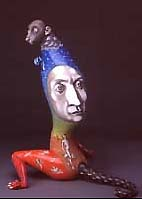

| Top Collection of American Ceramics
Makes New York City Debut at The Ubs Painewebber Art Gallery
Previous
A
number of ceramists at work during the past two decades have explored
painterly and sculptural concerns not always associated with the
clay medium. Mary Frank’s sculptural work Horse and Rider (1982)
features starkly expressive yet fragmented skeletal figures. Works
like Sergei Isupov’s Rustle (1999) and Marc Leuthold’s Diptych (1998)
extend traditional boundaries, indicating the innovative possibilities
for the future of American ceramics as the 21st century begins its
course.
The Everson Museum of Art
The Everson Museum of Art, established in 1896, is the primary visual
arts museum in Central New York. The museum offers a notable array
of exhibitions and educational programs centered on its holdings
of American art, a collection that ranges in date from the Colonial
era to the present, and includes 5,000 clay objects. Since 1932,
the Everson Museum has taken a leadership role in the collection
and exhibition of ceramics. Today, it maintains the most comprehensive
display of American ceramics in the nation, with over 1,000 exemplars
of the medium on permanent exhibition. For more information, contact
the Everson Museum of Art at (315) 474-6064 or visit the museum
website at www.everson.org.
UBS PaineWebber
Art Gallery
Continuing its long-standing commitment to the arts, UBS PaineWebber
Inc. sponsors five exhibitions each year in the UBS PaineWebber
Art Gallery, located in the lobby of its building at 1285 Avenue
of the Americas, New York City. Through its exhibition program,
the Gallery offers non-profit New York-area arts and cultural organizations
a midtown Manhattan exhibition space and the opportunity to introduce
their programs to a new audience. The UBS PaineWebber Art Gallery
enables many institutions to organize and mount exhibitions that
might not otherwise be seen. These exhibitions encourage interest
in the arts among the hundreds of employees, clients and members
of the general public who pass through UBS PaineWebber's building
each day.
Exhibitions at the UBS PaineWebber Art Gallery
Isamu Noguchi Foundation: Permanent Collection
An exhibition of the artist’s drawings and sculpture
April 10, 2003 – June 20, 2003
Studio in a School: Children’s Imagination
A collection of work produced by New York City public school children
in workshops led by artists
July 3, 2003 – September 12, 2003
The New York Philharmonic
An exhibition from the archives, on the occasion of the 160th Anniversary
September 25 – December 5, 2003
Hours and Admission
The UBS PaineWebber Art Gallery is located in UBS PaineWebber's
Corporate Headquarters, 1285 Avenue of the Americas (between 51st
and 52nd Streets) in New York City. The Gallery is on the ground
floor of the building and exhibition hours are Monday through Friday
from 8:00 am until 6:00 pm. Admission is free.
For more information:
Amanda Domizio Jennifer Headley-Nordman
Ruder Finn Arts & Communications Counselors Everson Museum of
Art
(212) 583-2798 / domizioa@ruderfinn.com (315) 474-6064
**For recorded exhibition information: (212) 713-2885**
From an Everson Museum of Art press release. Links
and images inserted by the Editor.
Previous
More Articles
|